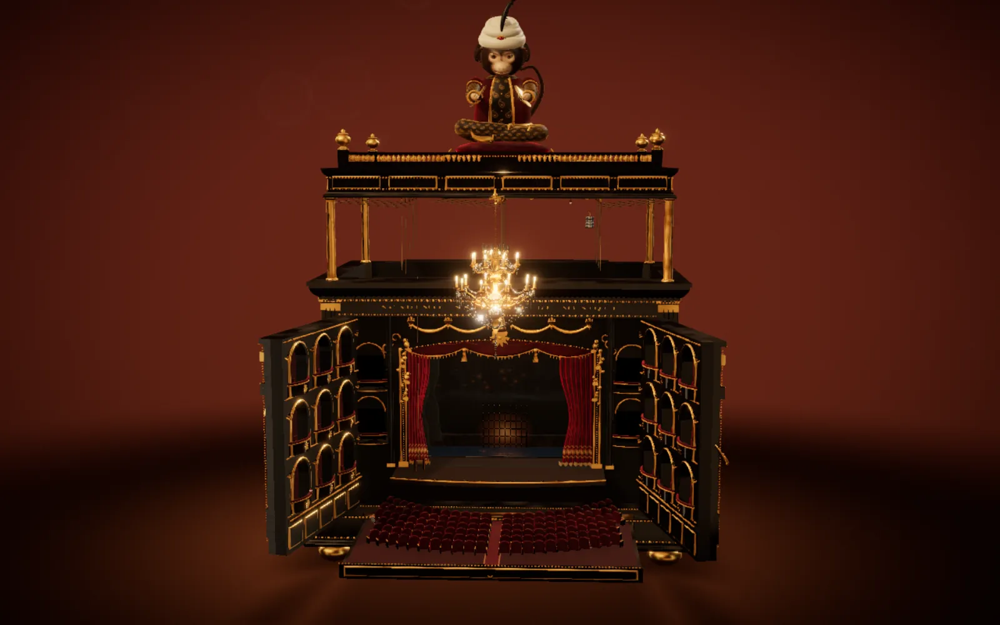

PROJECT NOTES / 2026.09
Lot 665 · The Opera
An 1881 Paris music box: wind it up, and a tiny opera house performs inside

Lot 665 is an 1881 Parisian automaton music box, waiting on an auction-house stand: black lacquer, gold trim, worn corners, and a monkey in a Persian robe sitting cross-legged on the lid. It stays asleep until you wind the key on its side. After three full turns the monkey strikes its cymbals, the windows begin to glow, and a live recording hums from somewhere inside the wood.
Flip the harp-shaped latch and the whole box unfolds into a theatre. The doors swing open into tiers of boxes, a crystal chandelier glides out over the stalls, and the seats rise one row at a time. The curtain opens on the underground lake, and the story follows the song: the Phantom rows across alone, Christine steps into his boat, and the candelabras rise as they disappear.
You are the director, too. Change the scenery, move the lights, poke the actors. When the spring runs down, the curtain falls and a single ghost light stays on. Sixteen gold medallions are hidden around the box; find them all and the theatre throws you a masquerade. Box Five is kept empty, as always. Tonight, he is sitting in it.